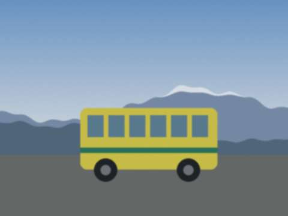
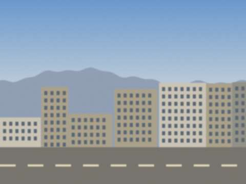
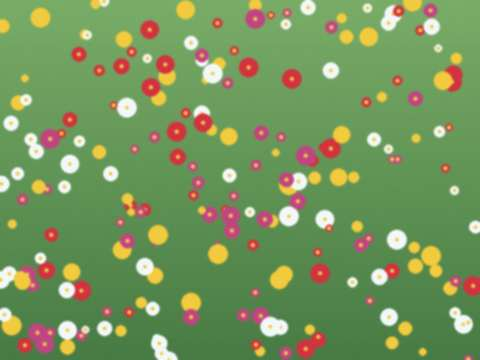
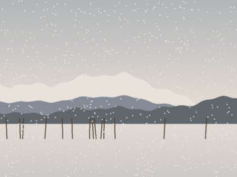
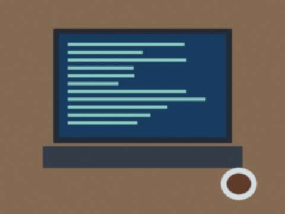

Archive for the ‘Me’ Category
Aug172011
Wednesday, August 17th, 2011 at 11:55 pm by meerim
I AM GETTING MARRIED ON SATURDAY!!!!!
Nurlan's family came with the kuda on Sunday, the sep is ready, mama is crying every day, Talgat came from Almaty, Jyldyz is doing my nails. The toi is at the toikana on the river. 400 people. I am so nervous I can't eat.
I will write after the wedding with ALL the photos, I promise!!! ♥♥♥
Posted in Me | 9 Comments »
Aug32011
Wednesday, August 3rd, 2011 at 8:20 pm by meerim
We wrote 400 invitations. Four hundred! By hand, with a gold pen, because mama says printed ones are "like a bank letter". My hand now looks like a claw.
 the stack of cards, with the dried flowers glued on each one. Jyldyz did the flowers. Jyldyz is a hero.
the stack of cards, with the dried flowers glued on each one. Jyldyz did the flowers. Jyldyz is a hero.Aika addressed 80 of them with her left hand because she had hurt her right in the college lab. Her letters look like a medieval manuscript. I love them.
Posted in Me | 1 Comment »
Jul102011
Sunday, July 10th, 2011 at 10:50 pm by meerim
Who knew a toi needs someone to talk for five hours? A tamada! We've seen four. The first was too loud, the second wanted a lot of money, the third read from a paper, and the fourth — silver hair, a calm voice — said "I won't talk too much, I'll just make sure nobody is bored and nobody is hungry." Papa said "him."
 our list: tamada 1,2,3,4. #4 has three stars and a big tick.
our list: tamada 1,2,3,4. #4 has three stars and a big tick.400 people. A hall on the river. A man to keep the hall alive. I am a bit terrified, a bit happy.
Posted in Me | 1 Comment »
May142011
Saturday, May 14th, 2011 at 7:40 pm by meerim
I cleaned the flat twice. Mama baked. Papa put on his good shirt. Nurlan's mother came with a box of sweets and sat on the sofa with her hands on her knees, looking at everything. She asked me three questions: "Do you cook?" (yes), "Do you read?" (yes, a lot), "What do you listen to?" (Kök Bel!! I said Kök Bel. I did not say tüntolk.)
Nurlan looked at me from the doorway as if I'd said the right thing. I had said a half-true thing. Same effect.
Posted in Me | 1 Comment »
Mar82011
Tuesday, March 8th, 2011 at 8:30 pm by meerim
Tulips from Nurlan. That is all I will say. ♥♥♥
OK one more thing: he likes Kök Bel and not tüntolk. Nobody is perfect.
Posted in Me | No Comments »
Jan302011
Sunday, January 30th, 2011 at 9:30 pm by meerim
It snowed all weekend. On Sunday Nurlan came to our building with a bag of walnuts and a thermos, stood under the window and shouted "Meerim!" until Bars ran to the glass. Mama looked out and said "this one is polite". I said "mama!". She said "I'm just saying".
We walked around the block 6 times. At the end he asked for my number. I gave him the number. I gave him also the old one, in case. He said "why two?" I said "in case you're lost".
Posted in Me | No Comments »
Jun262010
Saturday, June 26th, 2010 at 10:10 pm by meerim
At Asel's cousin's birthday, there was a boy who plays the komuz (badly, he says, I agree) and knows all the words of "Talas Sunrise". All of them. Even the bit nobody knows. His name is Nurlan, he studies geography at TSU (third year), he is shy, and he is not tall.
the river, where we walked after the party. He carried my shoes. I don't know why, I didn't ask.
I did not tell him about tüntolk. I'll wait.
Posted in Me | 2 Comments »
Sep122009
Saturday, September 12th, 2009 at 5:50 pm by meerim
Aika started at the medical college. She wears a white coat and looks like a doctor who has seen too much. She has stopped wearing black except on Fridays, "for the soul".
I asked if she still listens to tüntolk. She said "all the time. Quieter." That sounded like growing up. I'm not ready.
Posted in Me | 1 Comment »
May92009
Saturday, May 9th, 2009 at 11:00 pm by meerim
Today was Old Iradi lit and I think I passed. The question was about the farewell in Akyrky Ashuu. I wrote four pages. At the end I started to cry (on paper, not really). The teacher who read it will think I'm strange.
Don't tell anyone, but this is the first time at university that I forgot I was afraid.
Posted in Me | No Comments »
Feb222009
Sunday, February 22nd, 2009 at 8:30 pm by meerim
The winter stairwell kitchen turned into a birthday party! Auntie Raisa from floor 3 is 60 and the whole stairwell brought her something: a scarf, pelmeni (of course), a bottle of jam from 2004, and six candles on a cake that ran out of candles.
 her table. the pelmeni plate is on the left, the samovar in the middle, the jam in the right, untouched since 2004.
her table. the pelmeni plate is on the left, the samovar in the middle, the jam in the right, untouched since 2004.She said "I'm only celebrating because the building cooked together for six weeks and survived". Cheers to the building!!!
Posted in Me | No Comments »
Jan212009
Wednesday, January 21st, 2009 at 5:00 pm by meerim
No light, no heat, but our building has GAS so all the neighbours cook together on the stairwell on two plates, it is almost a party. Auntie Raisa from floor 3 makes the best pelmeni. We play cards by candles. I am writing from the university computer centre (the warm one). See you in the light ★
Posted in Me | No Comments »
Dec52008
Friday, December 5th, 2008 at 10:00 pm by meerim
Long time no write, sorry dear readers (all 4 of you). University is hard. Old Iradi literature is SO long. Our teacher reads Akyrky Ashuu to us like it is a thriller and actually... it is good?? Don't tell anyone.
Talgat moved to Almaty to work. The house is quiet. Bars sleeps in his bed.
Posted in Me | No Comments »
Oct122008
Sunday, October 12th, 2008 at 9:20 pm by meerim
Talgat is going to Almaty on Thursday for a job. At home: a big table, mama's plov (I stirred), papa's toast (long), and Talgat saying "I'll come at New Year, don't cry" while his eyes were red.

the bus to Almaty at the station, the day before. The bus was not very new. Mama checked the tyres.He gave me his headphones. The good ones. I said "you'll want them". He said "I'll buy new in Almaty". I know he won't. I'll keep them for him.
Posted in Me | 1 Comment »
Apr262008
Saturday, April 26th, 2008 at 6:10 pm by meerim
Kündölük changed (2.0) and my stars disappeared from the titles and the dashed lines around the comments vanished and I thought: my blog is dead!!!! I wrote to Bekzhan, who looked at my CSS and found ONE LINE (one quotation mark that was the wrong kind). He fixed it by e-mail in an hour.
He says he is "an engineer, not a hero". He IS a hero. Thank you Bekzhan!!! ★★★ The stars are back.
Posted in Me | 1 Comment »
Mar182008
Tuesday, March 18th, 2008 at 9:30 pm by meerim
The dollar costs 8.40 now. Mama has a jar with dollars (for the sep, "for a rainy day", she says, and every day is rainy). She counted them in the evening, twice. Then she looked at the jar as if it had grown. Then she said "so we are richer" and then "so everything costs more" and then, tired, "so we are the same".
Papa said a smart thing: "A rate is a number, a family is a family." I wrote it on a sticker.
Posted in Me | No Comments »
Dec312007
Monday, December 31st, 2007 at 11:20 pm by meerim
This year was long. I'm writing it down because we should remember: we are all here. Mama, papa, Talgat, me, Bars (fat), Jyldyz, Aika, Asel, Bekzhan and the 10 or so readers.
A wish: that next year is boring.
Posted in Me | No Comments »
Sep172007
Monday, September 17th, 2007 at 10:45 pm by meerim
Everyone is smart and everyone is hungry. We have 5 lectures a day, a break of 20 minutes, and one canteen with a queue that goes round the building. I bought a pie for 2 som and ate it standing.
The girls in philology do have good boots. I have my school boots. Mama says "buy in winter, with the first stipend". I will.
My neighbour at the lectures is a boy from Iyık Janyl who knows Old Iradi by heart. He writes poems and hides them. I found one by accident. It was good. Don't tell anyone.
Posted in Me | No Comments »
Aug252007
Saturday, August 25th, 2007 at 8:00 pm by meerim
The lists went up at the university today and my name is on it!!! PHILOLOGY!!!! Number 31 on the list (a good number, 31 is the school and the bus!). I stood in the crowd in front of the board and shouted so loud that a stranger gave me his hand and said "congratulations, daughter".

the lists on the wall of the main building. There are 400 names. I am one of them. Cannot believe.Mama sat down on the step and laughed. Papa said "now you can translate tüntolk". Papa listens. ★
Posted in Me | 2 Comments »
Jun202007
Wednesday, June 20th, 2007 at 9:00 pm by meerim
Still here. All of us. Jyldyz, Aika, Asel, Talgat, mama, papa, Bars. All alive.
Our school has the windows broken, they say it will be repaired for September. They say the Synak will be later this year. I don't care. Everybody is alive.
I listened to Jolchu all the time in the corridor on my Walkman with the last batteries. Jolchu is about the road, and somebody who keeps going. I will not say more. ★
Posted in Me | No Comments »
Apr242007
Tuesday, April 24th, 2007 at 3:30 pm by meerim
we are ok. we sit in the corridor in the night, mama says away from the windows. school is closed. i write from the neighbours computer. i am scared. please pray for talas.
Posted in Me | 2 Comments »
Mar42007
Sunday, March 4th, 2007 at 5:40 pm by meerim
We have a new girl in class, her name is Aijamal. She came from one of the villages in Kara-Buura in February, with her mother, and they live with an aunt in a flat with eight people. She doesn't talk. The teacher said "be kind", and then said it again. We didn't need to be told.
Today at the break I gave her half of my bun. She looked at it like it was a present. I felt stupid for having half a bun. Tomorrow I'll bring a whole one.
Posted in Me | 1 Comment »
Jan272007
Saturday, January 27th, 2007 at 6:20 pm by meerim
We had a trial for the Synak (not the real one). Three hours. It was like an exam in a dream: I knew everything but my hand was too slow. In the maths part I wrote one answer and then looked at the clock and it was 40 minutes later.
Result: 74 points from 100. Mama said "good". I said "it's a lie, the real one will be harder". Mama said "you can't please everyone". I said that is exactly what a test does.
Posted in Me | No Comments »
Dec32006
Sunday, December 3rd, 2006 at 10:00 pm by meerim
On TV they said today is the day. Asel's father drives a car for a contractor at the base, he said at supper "they told us the base stays", and he repeated it three times, so we all knew he wasn't sure. Asel brought me a chocolate with an English wrapper "for the memory".
I don't have an opinion. I have Kara Suu on in the corridor and I'm drawing little stars on my hand.
Posted in Me | 1 Comment »
Sep12006
Friday, September 1st, 2006 at 9:00 pm by meerim
The last year of school!!! The big one. New teacher for literature, young, with glasses, who said on the first lesson "forget everything you think you know about Akyrky Ashuu". I think I love her.
Asel is already sad because everything is "the last". The last bell, the last autumn, the last dictation. I told her to calm down, it's only September.

first day bouquets, they always are the same: asters and gladioli, wrapped in newspaper.
Posted in Me | No Comments »
Aug212006
Monday, August 21st, 2006 at 7:30 pm by meerim
One year of the blog!!! Counter says 2,900 (it is mostly me, refreshing). Things I learned:
- Not everyone likes tüntolk (this is a surprise to me).
- Four readers is enough if they are the right four.
- Comic Sans makes people angry. I will keep using it.
Thank you Aika, Jyldyz, Asel, Bekzhan, Erkin (hello Moscow!). Also thank you to the person from Almaty who wrote "your blog is cute" and left a link to a mobile phone shop. Rude. But still cute.
Posted in Me | No Comments »
Apr232006
Sunday, April 23rd, 2006 at 6:00 pm by meerim
Went to the TSU open day with Talgat's friend Bekzhan (thank you Bekzhan!!). The university is SO BIG. I think I will go to philology, English and Iradi. Then I can translate tüntolk songs for the whole world :)
The girls in the philology faculty have very good boots.
Posted in Me | 1 Comment »
Mar122006
Sunday, March 12th, 2006 at 8:30 pm by meerim
Fireworks!!! We watched from the balcony with the neighbours. Auntie Raisa from floor 3 brought the pelmeni on a tray (the best pelmeni) and we ate them in coats. Every colour was reflected in the window of the building opposite, so we saw every firework twice.
Mama said "the first one was for the country, the second one is for us". She is sometimes poetic.
Posted in Me | No Comments »
Feb32006
Friday, February 3rd, 2006 at 7:00 pm by meerim
Bars saw snow for the first time (he is 2 and a half). He walked onto the balcony, put one paw in it, and looked at me as if I had done it. Then he went back and sat by the stove for four hours with his back to the window. Offended.

the balcony. the little paw prints are Bars's. the big ones are mine, I was chasing him.
Posted in Me | 1 Comment »
Dec312005
Saturday, December 31st, 2005 at 11:50 pm by meerim
It's 23:50 and I'm writing from the kitchen. Mama has made olivier and a roast, papa has opened a lemonade bottle (we have only lemonade), Talgat is lying under the tree with the TV remote. I wish everyone in Irad a good 2006. I wish Bars a lot of fish. I wish tüntolk a new album, a big one, with a hundred songs.
See you in the future!!! ★★★
Posted in Me | No Comments »
Nov152005
Tuesday, November 15th, 2005 at 10:20 pm by meerim
One year since Kündölük started! There was a notice at the top of my page. A cake picture. I am a blogger for three months so I get a quarter of a piece.
Jyldyz STILL does not have a blog. She promised in August. She says she doesn't have time. She has time to dye her hair. ;)
Posted in Me | No Comments »
Oct222005
Saturday, October 22nd, 2005 at 8:45 pm by meerim
Welcome to my room!!! Here is the wall: tüntolk (4 posters, 2 hand-drawn), Kök Bel (the cassette cover, taped up), a calendar with horses, and a photo of me and Aika when we were 6, both of us with no front teeth.

my desk. the lamp is a purple scarf over a lamp. Mama says it will burn. It has not burned.Bars lives on the bed and has opinions about the posters. He sits on Mor-Wave only.
Posted in Me | 2 Comments »
Sep12005
Thursday, September 1st, 2005 at 9:10 pm by meerim
First day of the 11th class!!! New bag (black), old friends. Jyldyz has dyed one strand of hair purple and the teacher pretended not to see it for three lessons and then said "Jyldyz, please." Good teacher.
Everyone is talking about the test, the NEW national one, the Synak. I am not talking about it. I am pretending it is next century. ★
Posted in Me | No Comments »
Aug202005
Saturday, August 20th, 2005 at 10:10 pm by meerim
My first post!!! Talgat (my brother) has his friend with a blog and he says I am too small for a blog. I am 15! So here is my blog, Talgat. :P
About me: I love tüntolk. I have Jolchu (copied cassette from Jyldyz's cousin) and Kara Suu (real CD! from Almaty! my uncle!). Everyone in my class says Kara Suu is boring and dark. They don't understand anything. It is about Nurzhan, about the black water from the refinery, about how a city is sad. It is genius.
OK it is late. Mama is shouting. Bye bye ♥
Posted in Me | 2 Comments »